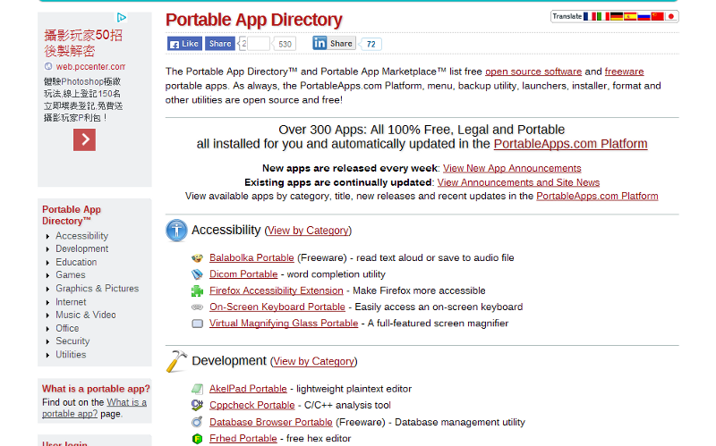

Hi sferrari,
1、大部份的狀況下，免安裝、可攜式、綠色軟體指的都是同一件事。維基百科上寫的註解我覺得很到位(
https://zh.wikipedia.org/wiki/%E7%B6%A0%E8%89%B2%E8%BB%9F%E9%AB%94)：綠色軟體，可攜式軟體，或稱綠色軟體（英文稱為Portable Application、Portable Software或Green Software），指一類小型軟體，多數為免費軟體，最大特點是軟體無需安裝便可使用，可存放於可移除式儲存媒體中（因此稱為可攜式軟體），移除後也不會將任何紀錄（登錄檔訊息等）留在本機電腦上。
我個人過去幾年，還常使用WINDOWS平台時，常會上右列這個名為「綠色工廠」的網站：
https://portable.easylife.tw/，來下載這些不需要安裝，而可以直接使用的應用程式；另外一個個人常使用的綠色軟體相關網站，則是右列這個「PortableApps.com」：
https://portableapps.com/，其上提供下載軟體的操作介面雖然大部份都沒有中文化，但數量上與分類上比起「綠色工廠」更豐富。
2、免安裝的軟體一樣會有授權的問題，其實只要牽涉到軟體「散布(distribution)」，都必須要先取得合法的軟體授權。因為各國的著作權法都規定，重製、散布、改作他人的軟體創作，都必須先得到著作權利人的允許與合法授權，然而，大部份的綠色軟體，作者都是採用免費軟體(Freeware)或是共享軟體(Shareware)的授權方式，將此軟體提供給他人使用。
免費軟體(Freeware)的授權模式，通常是授權使用者可以下載這個程式來安裝，但使用的環境必須是在非商業的前提下，例如一般個人用或家用的目的，而通常免費軟體是禁止使用者自行散布的，因為如果個別使用者都能夠拜訪原網站來下載，那原釋出網站的流量才能提高，進而讓程式的開發者有機會收取到網站廣告費用的收益；而共享軟體(Shareware)的授權模式，可說一般來說都是「進階版」的免費軟體，像免費軟體一樣，多數的共享軟體一樣會提供程式免費下載與免費使用，然而其完整功能的使用期間可能會有彈性的限制，例如全功能僅能使用三個月，三個月之後若是使用者沒有付費取得商業授權的認證碼，則程式會自動降階，後續使用者僅能使用該程式的基本功能。
延伸著討論，其實不難發現，部份的「綠色軟體」，其實看來就是「破解版」的私有化版權軟體(proprietary software)，那這樣的使用狀態不會有侵權使用方面的問題嗎？！
會的，如果去破解私有化的版權軟體，並進而以「綠色軟體」的方式散布它，那確實是一種「無權使用」的利用模式。所以除非個別使用者可以主張各國著作權法容許的「合理使用(fair use)」範圍，不然就是一種「侵權使用」。但一般來說，「破解」他人的私有版權軟體，再透過網站散布的方式讓他人來利用這些破解版的程式，多不能被認為合理使用，因為這些破解軟體的散布範圍極大，很容易就產生市場取代性，以致原生的私有版權軟體販售效率不彰，故此類破解式的綠色軟體，多會透過第三地、第三國的方式來架設散布網站，來規避法律上的查緝與追訴。不過，是的，這樣的使用方式，是侵權式的使用，其法律上的違犯性是在的，只是實務上會不會被司法單位進行追索的問題而已。
不過，您可以觀察一下PortableApps.com右列的軟體列表頁面：
https://portableapps.com/apps，仔細一看可以發現，其實PortableApps.com上面提供的免安裝軟體(綠色軟體)，目前多數都是拿「自由開源授權軟體(Free and Open Source Software, FOSS)」來進行改作的！而回歸到FOSS授權軟體的本質，本就可以讓使用者自行的改作與散布，所以說PortableApps.com此種利用方式，僅是將本來需要安裝的FOSS軟體，改為置於隨身碟裡完全不需要安裝就可以啟動的綠色軟體，那麼這種模式的利用，就完全不會有侵權使用的問題，因為其原生的FOSS，本就可以讓使用者自由地修改與散布，所以將本需要安裝的FOSS軟體，改為不需安裝就可以執行的綠色軟體，也是完全符合其預設的授權態樣的！
希望上述這些資訊，對您釐清疑惑有所幫助！

20140409 14:15 LUCIEN C.H. LIN 